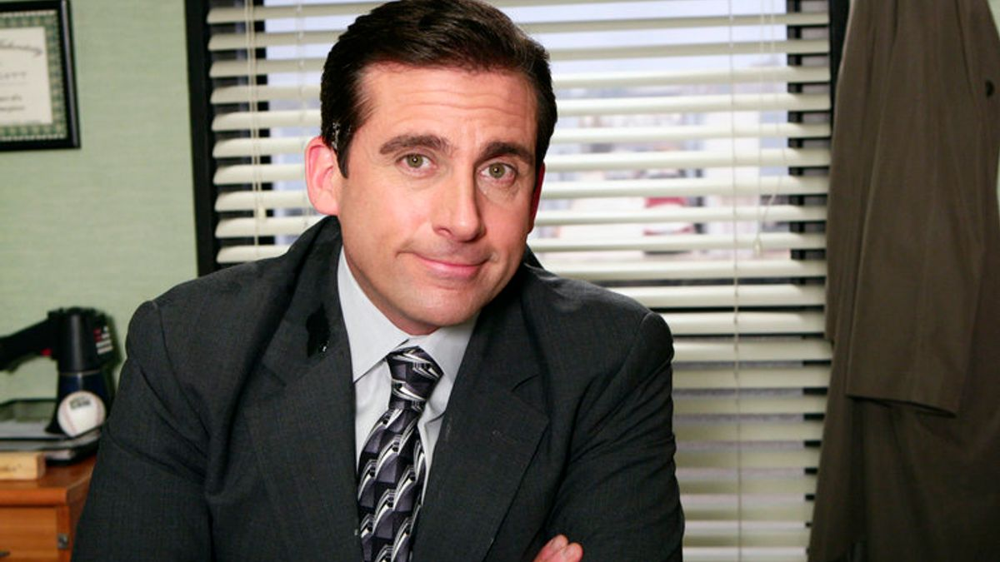

Olá, me chamo Iandra. não precisa me chamar pelo o sobre-nome. Tenho 23 anos e The Office se tornou a minha série favortita logo após a primeira temporada.
Comecei a assistir The Office por influência de um amigo, Oi Marcelinho, ele já havia assistido a série algumas vezes, acho que duas, e me indicou a assistir também, e tudo que ele falou estava certo, que a série era muito boa, muito engracada e ao mesmo tempo muito afetiva para ele. Assisti a série toda e sei que irei assistir novamente algumas vezes, a série é acolhedora, os personagens são cativantes e emocionantes.
O enredo se passa em um escritório normal em Scranton e de fato te ensina o que NÃO fazer em um ambiente de trabalho. Mas a série também te ensina sobre enxergar o próximo, aquela pessoa que senta ao seu lado todos os dias, durante 8h por dia. Te ensina que você pode criar uma amizade e uma familia com essas pessoas. Que independte se um dia cada um for para um lado, a amizade e o afeto continua. E isso é muito real, trabalhei com o Marcelinho na mesma empresa durante anos, e hoje infelizmente não trabalhamos mais juntos (a gente era terrível, não trabalhamos, apenas nos divertiamos e riamos, tipo The Office mesmo) porém isso não desfez nossa amizade.
Da primeira vez que assisti a série pensei que não iria gostar, a primeira temporada é a mais constrangedora por que voce simplesmente não conhece o feeling da série, eu odiava o Michael, porém com o tempo e com os episódios passei a amar o Michael e ter um carinho pelo personagem, adoro todos os personagens, mas Michal Scott definitivamente é o meu preferido.
